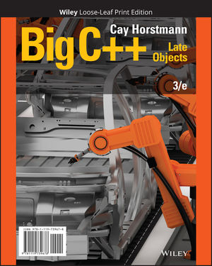

Course Details
Course Description [3-0-2:4]
The course vector means that the course consists of, per week,
- 3 hours of lectures
- 2 hours of lab excercises
and it gives you 4 credits for successful completion of the course.
| TEXTBOOK The textbook is "Big C++: Late Objects, 3rd Edition" (previously named "C++ for Everyone"), by Cay S. Horstmann (eBook ISBN: 9781119402978, purchase link)  |
Topics covered
|
Intended Learning Outcomes
On successful completion of this course, students are expected to be able to:
- Use common software tools to develop and debug a program written in an OOP language.
- Write a short program to solve a simple problem in an OOP language.
- Demonstrate that recursive and non-recursive functions are abstractions of sub-problems in a task.
- Describe the concept and the use of pointers in indirect addressing and dynamic memory allocation.
- Demonstrate the use of several data structures.
- Implement an abstract data type by defining a class in an OOP language.
Prerequisites & Exclusion
Pre-requisite: COMP 1021/1022P/1022Q or ISOM 3230. Exclusion: COMP 1003 / COMP 1004.
| Course Learning Outcome | Exemplary | Competent | Needs Work | Unsatisfactory |
|---|---|---|---|---|
| Use common software tools to develop and debug a program written in an OOP language. | Use an IDE such as VS Code proficiently to write, compile, run, and debug a C++ program consisting of one or many source files. | Use an IDE such as VS Code effectively to write, compile, run, and debug a C++ program consisting of one or many source files. | Use an IDE such as VS Code to write, compile, and run a C++ program consisting of one source file. Have difficulty in dealing with programs consisting of more than one source file as well as debugging. | Have difficulty in using an IDE such as VS Code to write, compile, run, and debug a C++ program consisting of one source file without guidance. |
| Write a short program to solve a simple problem in an OOP language. | Construct a solution to a written problem by writing a complete C++ program of no more than 500 lines of codes on one's own. | Construct a solution to a written problem by writing a complete C++ program of no more than 500 lines of codes on one's own if the requirements are clearly explained and the required programming constructs are told. | Require assistance to break down a written problem into sub-problems of sufficiently small sizes before being able to construct a solution for each sub-problem with no more than 100 lines of codes. The required programming constructs also need to be told. | Is unable to construct a solution to a written problem by writing a complete C++ program even under guidance. Skeleton code need to be given which breaks down the solution into a set of small functions with clear interface so that the student may be able to implement them. |
| Demonstrate that recursive and non-recursive functions are abstractions of sub-problems in a task. | Demonstrate thorough understanding of how recursion works. Be able to develop a recursive solution to a written problem on one's own, and sometimes contrast it with the corresponding non-recursive solution. | Demonstrate sufficient understanding of how recursion works. Be able to develop a recursive solution to a written problem if given the recursive algorithm, and sometimes contrast it with the corresponding non-recursive solution. | Demonstrate insufficient understanding of how recursion works. Be able to develop recursive solutions only to some simple problems, and only if the recursive algorithm is given. Cannot contrast the recursive solution with the corresponding non-recursive solution. | Is unable to understand how recursion works. Is unable to develop recursive solutions to problems even if the recursive algorithm is given. |
| Describe the concept and the use of pointers in indirect addressing and dynamic memory allocation. | Demonstrate strong understanding of the concept of pointers. Is able to use pointers effectively in indirect addressing and dynamic memory allocation in a great variety of scenarios. | Demonstrate sufficient understanding of the concept of pointers. Is able use pointerseffectively in indirect addressing and dynamic memory allocation in standard scenarios. | Demonstrate marginal understanding of the concept of pointers. Is able to use pointers in indirect addressing and dynamic memory allocation only in simple scenarios. | Demonstrate little understanding of the concept of pointers. Have great difficulty inusing pointers in indirect addressing and dynamic memory allocation even in simple scenarios. |
| Demonstrate the use of several data structures. | Is able to choose the appropriate data structures such as linked lists, stacks and queues to solve problems, and implement the solution in C++ on one's own. | Is able to use the required data structures such as linked lists, stacks and queues to solve problems, and implement the solution in C++ on one's own. | Is able to use the required data structures such as linked lists, stacks and queues to solve simple problems, and implement the solution in C++ with guidance. | Demonstrate little understanding of data structures such as linked lists, stacks and queues, and is unable to use them to solve problems even with guidance. |
| Implement an abstract data type (ADT) by defining a class in an OOP language. | Given the description of a simple ADT, is able to implement it with a complete C++ class definition that includes appropriate class members and class member functions. Is able to write programs that create and manipulate ADT objects. | Given the description of a simple ADT, able to implement it with a complete C++ class definition when its class members and class member functions are also hinted. Is able to write programs that create and manipulate ADT objects. | Given the description of the C++ class definition of a simple ADT, including its class members and class member functions, is able to implement the member functions. Sometimes is able to write programs that create and manipulate ADT objects. | Have great difficulty in understanding the link between a simple ADT and its C++ definition. Is unable to complete C++ definition for simple ADTs and to program with C++ classes. |
Questions?
If you have any questions, please first check the course FAQ page. If you don't find your answer, you may post a message in our online Piazza forum (accessed via menu on the COMP2011 Canvas site), which will be checked by all course staffs. If you do not get a timely response then please email the TA's or instructors.